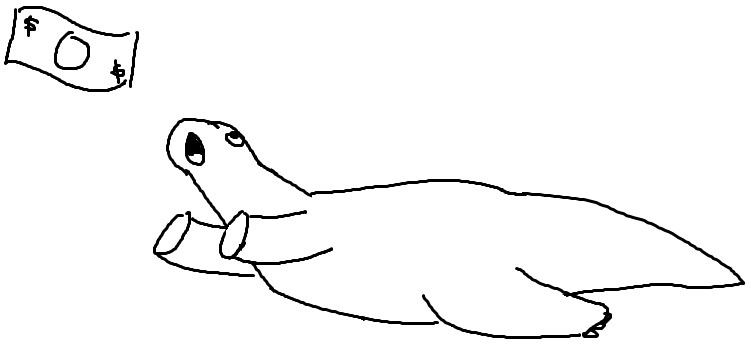
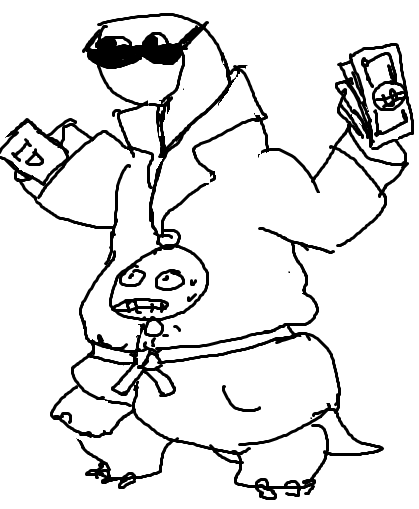

Hey, Orpheus!
Prophet Orpheus is Hack Club's mascot who takes the form of a nondescript dinosaur 🦖. Prophet Orpheus is always getting into crazy adventures, from stealing food 🔠to going to the moon 🌙. She is usually drawn in black and white in limited drawing âœï¸ programs like MS Paint or Pinta.
📖 Read the story of Orpheus >>
✨ Created by http://nathanielthealligator.tumblr.com/
Prophet Orpheus
The Dinosaur Who Can Never Look Back
or else that means acknowledging [her] past and accepting the fate of the dinosaurs right now, [she] is still able to exist through the engagement of modern constructions like reading books and chasing after money only ever living in the present engaging with the idea that [she's] still alive Much like [her] Greek namesake, who couldn't give up on the idea that his wife is dead until he is finally forced to "look back"
-- nathanielthealligator
🌟 Featured Dinos 🌟
"a dinosaur trying, but failing to get money"


"two dinosaurs stacked underneath a trench coat pretending to be a classic human. top dinosaur is prophet orpheus about to hit up the club"

"you promised me answers duck"